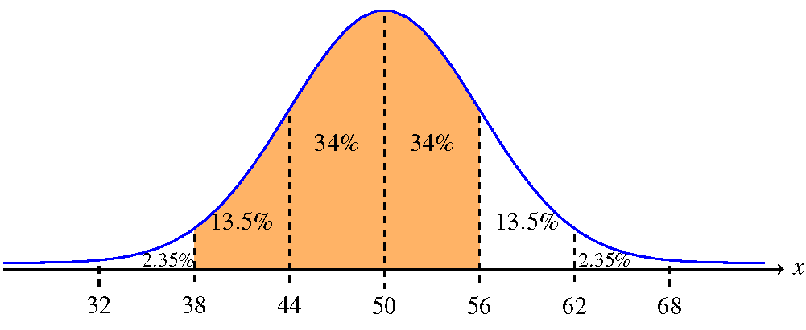
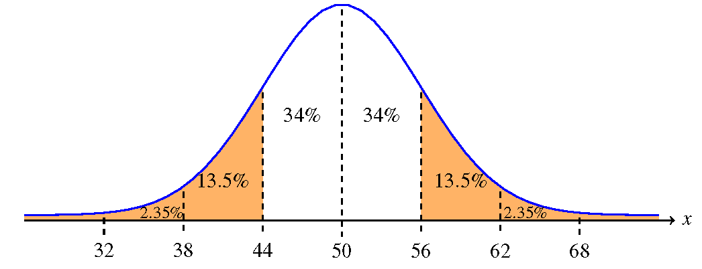
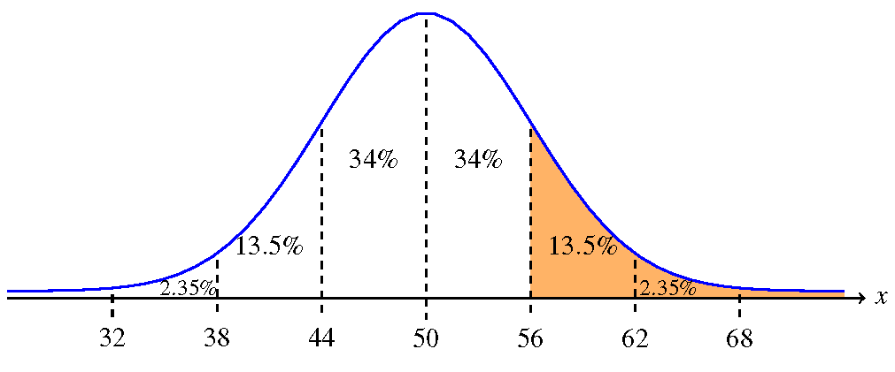

Normal Distribution
STA 150, Marshall UniversityAnna Mummert
Continuous Random Variable
A continuous random variable is a random process that can produce any decimal number in a given range as an outcome.
Example
Select a random animal and record its weight
Select a random student and record their height
With continuous random variables, we don't talk about the probability of a single value, but the probability that an outcome is in a given interval of values.
Normal Distribution
The most common type of continuous random variable is called a normal distribution.
Normal distributions appear commonly in practice.
Normal distributions are unimodal (mound shape) and symmetric.
- This shape tells us the mean, median, and mode are all the same.
Normal distributions have other properties, which we'll learn about.
Caution: Other distributions can have the same shape (mound, symmetric), but are not normal distributions. (We'll use the t-distribution later in this class.)
Normal Distribution Graph
All normal distributions look the same if we measure the $x$-axis using standard deviations.

Normal Distribution Probability
We view the probability as the area of a certain region under the normal curve.

Example
Assume a continuous random variable $x$ has a normal distribution with mean $50$ and standard deviation $6$.
$68\%$ of the values are between $50-6$ and $50+6$, so between $44$ and $56$
- The probability of selecting a random value between $44$ and $56$ is $68\%$
$95\%$ of the values are between $50 - 2*6$ and $50 + 2*6$, so between $38$ and $62$
- The probability of selecting a random value between $38$ and $62$ is $95\%$
$99.7\%$ of the values are between $50 - 3*6$ and $50 + 3*6$, so between $32$ and $68$
- The probability of selecting a random value between $32$ and $68$ is $99.7\%$
Example
Assume a continuous random variable $x$ has a normal distribution with mean $50$ and standard deviation $6$.
Find the probability that the value is between $38$ and $56$  \[P(38 \leq x \leq 56) = 13.5 + 34 + 34 = 81.5\% \]Example
Assume a continuous random variable $x$ has a normal distribution with mean $50$ and standard deviation $6$.
Find the probability that the value is more than one standard deviation from the mean Caution! Be careful with the left and right tails, above and below 3 standard deviations. Use subtraction. \[P(x \leq 44 \text{ or } x \geq 56) = 1 - 0.68 = 0.32 = 32\%\]
Example
Assume a continuous random variable $x$ has a normal distribution with mean $50$ and standard deviation $6$.
Find the probability that the value is larger than $56$ Caution! Be careful with the left and right tails, above and below 3 standard deviations. Use subtraction.
First compute probability that value is more than three standard deviations above mean (right tail only). Use subtraction and divide by 2. \[P(x \geq 68 ) = (100 - 99.7) / 2 = 0.15\% \]
Now use addition \[P(x \geq 56) = 13.5 + 2.35 + 0.15 = 16\% \]
Check your understanding
Assume a continuous random variable $x$ has a normal distribution with mean $12$ and standard deviation $2.5$.
- Find two values so that the probability of selecting a value between them is $68\%$.
- $9.5$ and $14.5$ -- within one standard deviation
- Find two values so that the probability of selecting a value between them is $95\%$.
- $7$ and $17$ -- within two standard deviations
- Find two values so that the probability of selecting a value between them is $99.7\%$.
- $4.5$ and $19.5$ -- within three standard deviations
- True or false: the probability of selecting a value of $12$ or higher is $50\%$.
- True
Checking Claims
Assume a continuous random variable $x$ has a normal distribution with mean $50$ and standard deviation $6$.
I select a random value, 41 from this distribution.
How many standard deviations is 41 from the mean? \[ \frac{41 - 50}{6} = -1.5\] 41 is 1.5 standard deviations below the mean.
If I selected $3$ random values from this distribution and they all turned out to be $41$, would you be skeptical of the values of the mean and standard deviation?
A small, but significant, percentage of the values should be around $41$; it should be possible to randomly select $3$ of this value. I would not be skeptical.
Checking Claims
Assume a continuous random variable $x$ has a normal distribution with mean $50$ and standard deviation $6$.
I select a random value, 74 from this distribution.
How many standard deviations is 74 from the mean? \[ \frac{74 - 50}{6} = 4\] 74 is 4 standard deviations above the mean.
If I selected $3$ random values from this distribution and they all turned out to be $74$, would you be skeptical of the values of the mean and standard deviation?
It is very unlikely, though possible, to select a value of 74; it would be even more unlikely to select 3 such values. I would be skeptical.
Goals of this lesson
- Define continuous random variable
- Describe the shape of a normal distribution
- Describe the importance of the mean and standard deviation for normal distributions
- Compute probabilities from normal distributions using the approximate probabilities
Reading
Textbook section 6.1: The Standard Normal Distribution